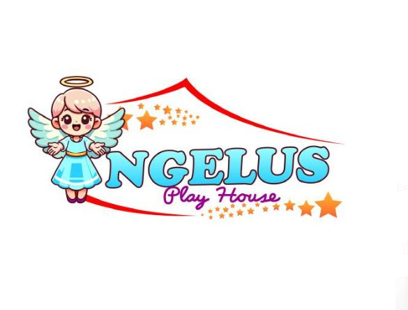
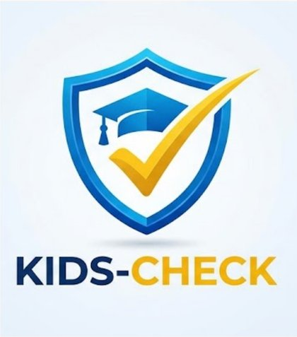

Angelus Play House
Asistencia escolar simple y segura
KIDS-CHECK es una página que ayuda a llevar el control de asistencia de los estudiantes. Permite organizar la información y consultar los registros de una manera sencilla.
¿Cuál es el problema?
Cuando la asistencia se registra en hojas o cuadernos, pueden ocurrir errores y se puede perder información.

Pérdida de información
Las hojas se pueden extraviar o dañar.
Errores al tomar lista
Al escribir los datos a mano pueden ocurrir equivocaciones.
Mucho tiempo
Buscar los registros de un estudiante puede tomar tiempo.
Nuestra solución: KIDS-CHECK
KIDS-CHECK permite registrar y consultar la asistencia de los estudiantes desde una página web. La información se presenta de forma clara y ordenada.
¿Quiénes pueden utilizarlo?
- Directora
- Profesores
- Auxiliares

Ejemplo de registro de asistencia
La siguiente tabla muestra un ejemplo de cómo se pueden organizar los datos de los estudiantes.
| Estudiante | Grado | Fecha | Asistencia |
|---|---|---|---|
| Mateo García | Inicial 5 años | 16/10/2026 | Presente |
| Sofía López | Inicial 5 años | 16/10/2026 | Presente |
| Lucas Martínez | Inicial 5 años | 16/10/2026 | Ausente |
| Valentina Rojas | Inicial 5 años | 16/10/2026 | Tarde |
Reporte de ejemplo
Estudiante: Mateo García
Faltas del mes: 2
Porcentaje de asistencia: 91%
Ventajas de KIDS-CHECK
Fácil de usar
Los profesores pueden registrar la asistencia de forma sencilla.
Información ordenada
Los datos de los estudiantes se encuentran organizados.
Consulta rápida
Se puede revisar la información cuando sea necesario.
Formulario de contacto
Si tienes alguna consulta sobre KIDS-CHECK, puedes completar este formulario.
¿Cómo está hecha la página?
HTML
Se utiliza para agregar títulos, textos, imágenes, enlaces, tablas y formularios.
CSS
Se utiliza para cambiar los colores, tamaños, espacios y organización de la página.
JavaScript
Se utiliza para mostrar mensajes y permitir algunas acciones sencillas.